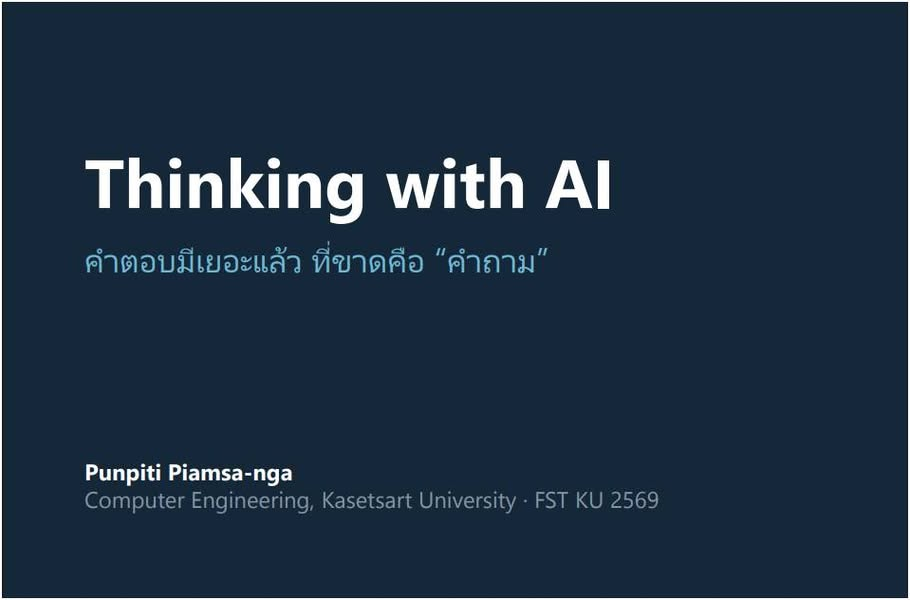
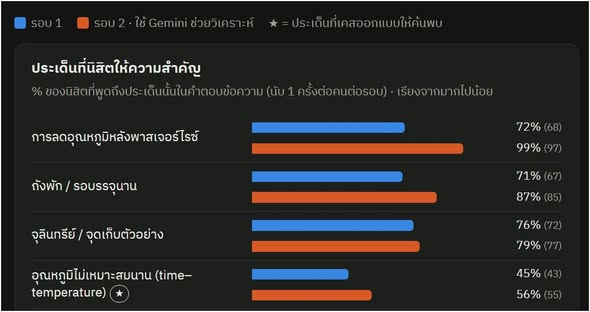
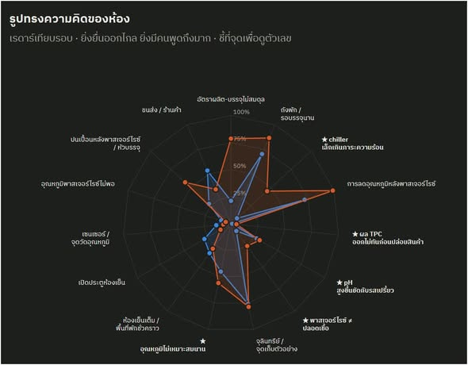
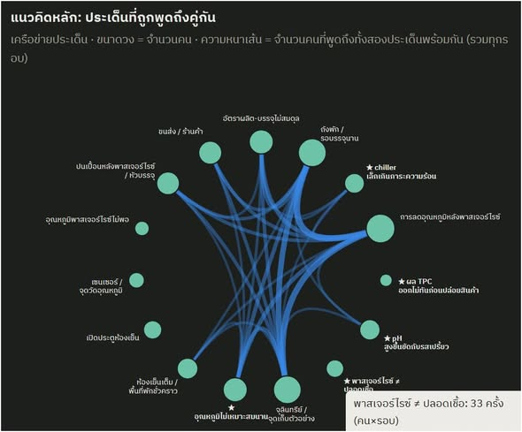

AI for Research: ใช้ AI ทำวิจัย โดยที่คนยังเป็นคนคิด


วันนี้ผมได้ไปสอน AI for Research ให้นิสิตชั้นปีที่ 3 สาขา Food Science and Technology มหาวิทยาลัยเกษตรศาสตร์ และทำซอฟต์แวร์ขึ้นมาใช้ใน Workshop โดยเฉพาะ เป้าหมายคือให้นิสิตฝึกใช้ AI ในกระบวนการวิจัย โดยยังรับผิดชอบการตั้งโจทย์ ตรวจสอบข้อมูล และตัดสินใจด้วยตนเอง
ผมเริ่มจากเคส Shelf-life Breakdown in a Chilled Soy Milk Line โรงงานนมถั่วเหลืองพาสเจอร์ไรซ์ที่สินค้าควรเก็บได้ 10 วัน แต่ช่วงหลังกลับบวมและเปรี้ยวตั้งแต่วันที่ 5–7 โจทย์นี้ออกแบบให้นิสิตใช้ความรู้ด้านอาหารแยกแยะข้อมูล ก่อนลองใช้ AI ช่วยวิเคราะห์
โจทย์ที่ดีเปิดโอกาสให้ใช้ความรู้ในสาขาตรวจข้อมูล
ในเคสมีข้อมูลตั้งแต่กำลังของ chiller อัตราการผลิตและบรรจุ ขนาดห้องเย็น ตำแหน่งเซนเซอร์ จุดเก็บตัวอย่าง TPC การหยุดเครื่องบรรจุ ไปจนถึงคำบอกเล่าของผู้จัดการโรงงาน บางข้อมูลช่วยอธิบายปัญหา บางข้อมูลอาจพาให้เข้าใจผิด และบางตัวเลขคำนวณแล้วจะพบว่าไม่สอดคล้องกัน
ผมตั้งใจให้นิสิตมองเห็นความผิดปกติเหล่านี้จาก ความรู้ Food Science ของตนเอง เรื่องนี้เป็นความเชี่ยวชาญที่นิสิตด้านอาหารควรใช้ได้ดีกว่าคนทั่วไปอย่างผม จึงต้องอาศัยทั้งความเข้าใจในสาขาและการตรวจหลักฐาน แทนการยอมรับข้อมูลทุกชิ้นในโจทย์
คิดเองก่อน แล้วจึงใช้ AI พร้อมวิธีตรวจคำตอบ
นิสิตเข้าระบบด้วยชื่อเล่นโดยไม่จำเป็นต้องเก็บชื่อจริงหรือข้อมูลส่วนบุคคล จุดประสงค์ของกิจกรรมคือดูวิธีคิดและสิ่งที่เรียนรู้จากกระบวนการ มากกว่าการจัดอันดับว่าใครเก่งกว่าใคร
Workshop แบ่งเป็นสองรอบ รอบแรกให้นิสิตคิดเอง ส่วนรอบสองให้ใช้ AI ช่วย ก่อนเริ่มรอบสอง ผมอธิบายการตั้งโจทย์ เขียน prompt ตรวจคำตอบ พิจารณาสมมติฐาน และคำนวณตรวจตัวเลข โดยย้ำว่า ความคล่องในการตอบของ AI ไม่ใช่หลักฐานว่าคำตอบถูกต้อง
ในกลุ่มที่ทำครบสองรอบ ผลงานรอบหลังดีขึ้น
นิสิต 93 คน ทำครบทั้งสองรอบ ตามข้อมูลที่สรุปในโพสต์ สัดส่วนผู้ที่เห็นว่าระบบเริ่มเสียสมดุลตรงจุดที่เคสออกแบบไว้เพิ่มจาก 43% เป็น 82% ส่วนผู้ที่พูดถึงประเด็นสำคัญที่ซ่อนอยู่ในโจทย์อย่างน้อยหนึ่งเรื่องเพิ่มจาก 62% เป็น 82%
จำนวนประเด็นที่แต่ละคนนำมาวิเคราะห์เพิ่มจากเฉลี่ยประมาณ 5 ประเด็น เป็น 6.5 ประเด็นต่อคน ผลเหล่านี้เป็นข้อสังเกตจากกิจกรรมในห้องเรียน ซึ่งรอบสองมีทั้งการใช้ AI และวิธีคิดที่สอนไป จึงยังใช้สรุปว่า AI เพียงอย่างเดียวทำให้ผลงานดีขึ้นไม่ได้
สิ่งที่น่าสนใจคือ นิสิตตรวจและแก้คำตอบของ AI
ข้อมูลที่นิสิตรายงานเกี่ยวกับการใช้ AI แสดงให้เห็นการใช้วิจารณญาณหลายรูปแบบ ได้แก่ 63% ระบุว่าใช้ความรู้ Food Science ของตนแก้ข้อสรุปของ AI, 50% ตัดข้อเสนอที่ขัดกับข้อจำกัดของโจทย์, 33% กลับไปคำนวณตัวเลขเอง และ 21% พบว่า AI ตั้งสมมติฐานบางอย่างโดยไม่ได้ตรวจสอบ
สิ่งที่ผมอยากเห็นคือ คนใช้ AI แล้วพัฒนาวิธีคิด การตรวจพบข้อจำกัด แก้ข้อสรุป และเลือกไม่ทำตามคำแนะนำบางอย่างของ AI ล้วนต้องอาศัยความเข้าใจของผู้ใช้ ข้อมูลส่วนนี้เป็นสิ่งที่นิสิตรายงานเกี่ยวกับกระบวนการของตน
คำตอบของทั้งห้องทำให้เห็นการเชื่อมโยงของความคิด
เมื่อจบสองรอบ เรามีคำตอบข้อความเกือบหนึ่งพันคำตอบให้พิจารณาในระดับห้องเรียน สามารถดูได้ว่าประเด็นใดถูกพูดถึงร่วมกัน เรื่องใดถูกมองข้าม และแนวคิดของทั้งห้องเปลี่ยนไปอย่างไรระหว่างสองรอบ
จากข้อมูล นิสิตเริ่มเชื่อมโยง chiller, cold chain, จุดเก็บตัวอย่าง, bottleneck ของกระบวนการ และการปนเปื้อนหลังพาสเจอร์ไรซ์เข้าด้วยกันมากขึ้น รวมถึงแนวคิด พาสเจอร์ไรซ์ ≠ ปลอดเชื้อ ตัวอย่างภาพหน้าจอต่อไปนี้แสดงประเด็นสำคัญ รูปทรงความคิดของห้อง และประเด็นที่ถูกพูดถึงร่วมกัน






อ่านโค้ดเป็น ช่วยเปิดเครื่องมือวิเคราะห์ให้กว้างขึ้น
ข้อมูลจากระบบส่งออกเป็น JSON หรือ CSV เพื่อนำไปใช้กับ Google Colab ทำ Data Visualization หรือ Machine Learning ต่อได้ นิสิตบางคนเริ่มตกใจกับโค้ด แต่ผมไม่ได้คาดหวังให้ทุกคนเป็นโปรแกรมเมอร์ จุดที่อยากให้เห็นคือการอ่านโค้ดเป็นช่วยให้เข้าถึงเครื่องมือวิเคราะห์ได้มากขึ้น
จากนั้นผมตั้งใจทำ Workshop อีกเรื่องเกี่ยวกับการใช้ AI ค้นหาอาจารย์ที่ปรึกษาหรือนักวิจัยที่ตรงกับความสนใจ แต่เวลาเหลือเพียงพอสำหรับ Demo เท่านั้น เป้าหมายคือให้นิสิตเห็นว่าการสืบค้นงานวิจัยมีเครื่องมือและวิธีคิดให้สำรวจต่อจากการใช้ฐานข้อมูลเป็น
พื้นฐานที่แน่นทำให้ใช้เทคโนโลยีได้อย่างเข้าใจ
ผมย้ำกับนิสิตเสมอว่า Fundamental Core ยังสำคัญมาก และเป็นจุดแข็งของมหาวิทยาลัย ผู้ที่มีพื้นฐานแน่นย่อมมีเครื่องมือพิจารณาว่า AI กำลังพูดเรื่องอะไร ข้อสรุปสมเหตุสมผลหรือไม่ และควรถามอะไรต่อ
สิ่งที่ควรเติมคือ Technology Patch โดยเข้าใจเทคโนโลยีให้มากกว่าการใช้งานตามขั้นตอน คนที่มีครู ตำรา และ AI ตัวเดียวกันก็ยังให้ผลลัพธ์ต่างกันได้ เพราะความเข้าใจ ประสบการณ์ และวิธีคิดของแต่ละคนแตกต่างกัน
ผล Workshop เป็นข้อสังเกตในห้องเรียน ยังไม่ใช่ข้อพิสูจน์เชิงวิจัย
กิจกรรมนี้ ไม่ได้ออกแบบเป็น controlled experiment และไม่ได้มีวัตถุประสงค์พิสูจน์ว่า AI ทำให้คนฉลาดขึ้น จึงไม่ควรนำตัวเลขไปอ้างเป็นข้อสรุปเชิงเหตุเกี่ยวกับประสิทธิผลของ AI
สิ่งที่สังเกตได้คือ ในกิจกรรมนี้ เมื่อนิสิตมีความรู้เดิม ได้รับโจทย์และคำแนะนำวิธีคิด แล้วใช้ AI เป็นเครื่องมือ ผลงานในรอบที่ใช้ AI ดีขึ้น คำถามสำหรับการสอนต่อไปจึงอยู่ที่การออกแบบกระบวนการให้นิสิตได้ฝึกตั้งคำถาม ตรวจหลักฐาน และตัดสินใจด้วยความเข้าใจของตนเอง
ขอบคุณ Waraporn Boon ที่เชิญมาร่วมสอนและทำ Workshop กับนิสิตในครั้งนี้